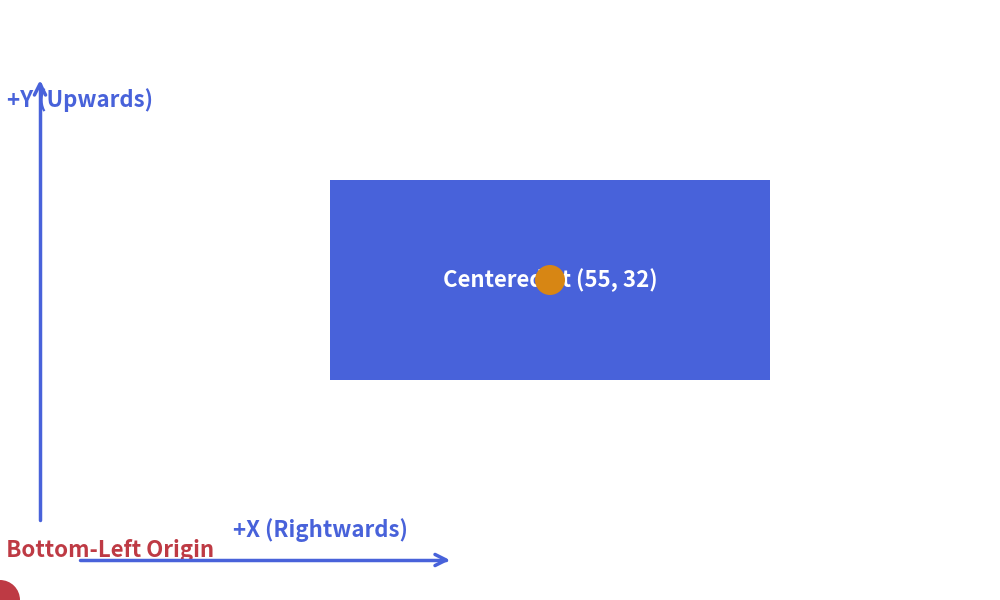
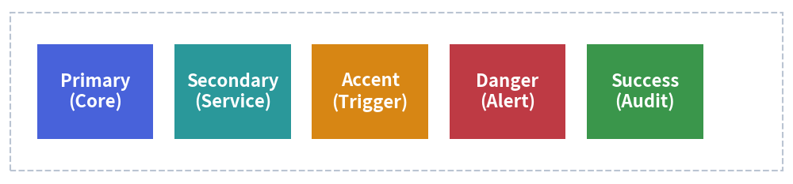

Core Visual Concepts
To create clean, professional illustrations with Drawlib, it is important to understand its underlying geometry and visual design principles.
1. Cartesian Coordinate Space
Drawlib uses a standard mathematical Cartesian coordinate system:
- Origin
(0, 0)is at the Bottom-Left:xincreases horizontally to the right.yincreases vertically upwards. (This differs from traditional computer graphics/HTML canvas where(0, 0)is at the top-left).
- Center-Based Anchoring:
- By default, all closed shapes (
rectangle,circle,donuts,polygon) and icons are anchored at their exact geometric center(x, y).
- By default, all closed shapes (

2. Canvas Sizing & Virtual Units
Canvas dimensions specified in setup(width=..., height=...) represent arbitrary virtual coordinate units, not physical pixels.
Drawlib maps these coordinate units to high-resolution display pixels automatically.
Recommended Canvas Dimensions
Choose dimensions that match the natural aspect ratio of your diagram:
- Wide Schemas (16:9 / Landscape):
width=120,height=50orwidth=140,height=60 - Balanced Cards (4:3):
width=100,height=75 - Square / Symmetrical:
width=100,height=100
3. Perimeter Margins and Breathing Room
A common mistake when generating diagrams is placing elements too close to the canvas edges.
- Keep 5%–10% Margin: Leave breathing room around all four borders. For a canvas with
width=100andheight=60, avoid placing text or shape boundaries belowx=5, abovex=95, belowy=5, or abovey=55. - Containers Before Components: Draw boundary containers (e.g.
rectangle(..., style=Styles.MutedDashed)) to establish visual scopes before positioning child components.
4. The 6-Color Semantic Design System
Professional illustrations maintain visual clarity by structuring colors around Drawlib's 6 core semantic roles, anchoring around primary while utilizing the other roles to represent distinct components and states without artificial frequency restrictions:

- Primary Anchor (
Styles.Primary): Central workflow spine, core microservices, and primary subject matter. - Functional Semantics (
Styles.Secondary,Styles.Accent,Styles.Danger,Styles.Success): Auxiliary services, events, databases, alerts, and verified deliverables. Used actively across the diagram according to their functional intent without artificial percentage caps. - Muted Structural Base (
Styles.Muted): Neutral containers, group boundaries, subnets, and grouping boxes (Styles.MutedFlat,Styles.MutedDashed).
5. Development Overlay: Coordinate Grids
While prototyping, enable the coordinate grid to verify alignments:
# In code:
setup(width=100, height=60, grid=True)
Or via CLI flag without changing code:
$ uv run drawlib show my_diagram.py -g -o test_grid.png